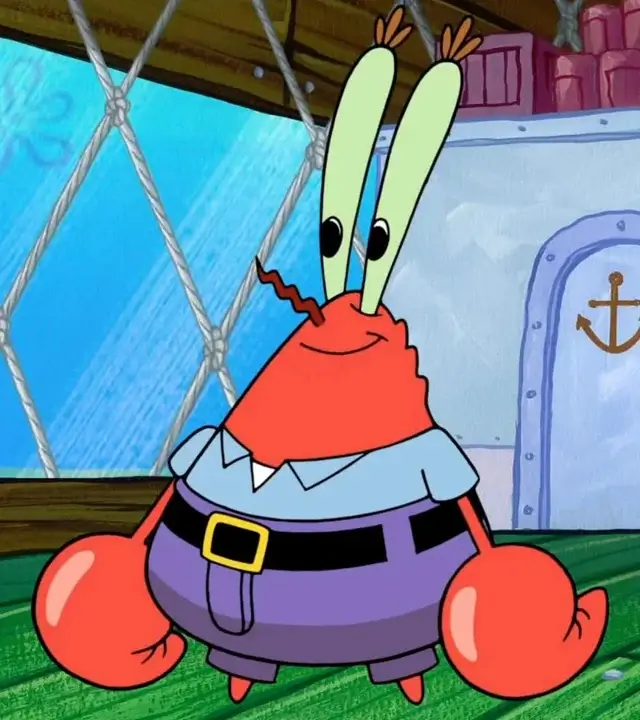
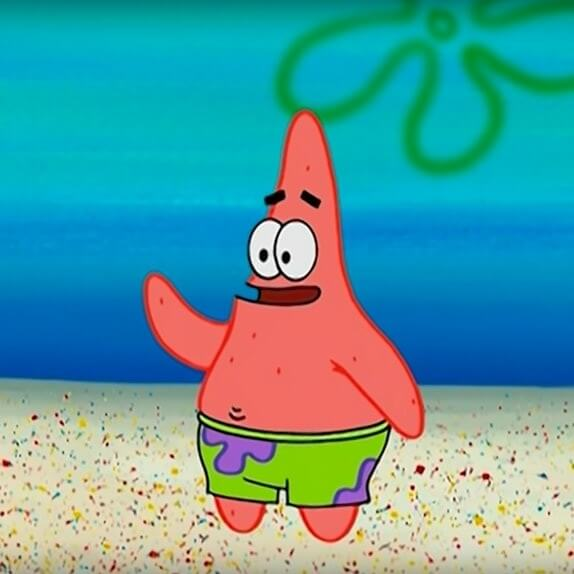
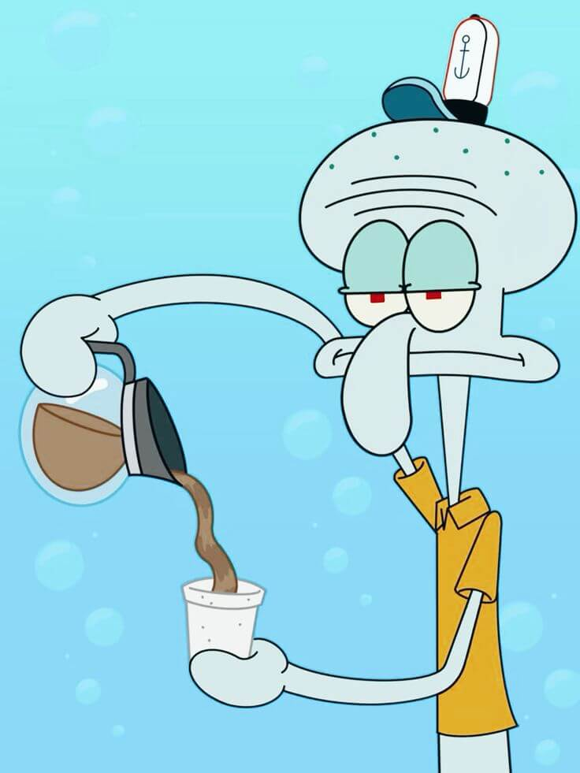
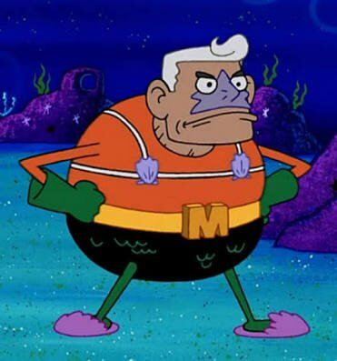
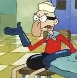

Bob Esponja
 O anfitrião da convenção e especialista em culinária de hambúrgueres de siri.
O anfitrião da convenção e especialista em culinária de hambúrgueres de siri.

O anfitrião da convenção e especialista em culinária de hambúrgueres de siri.
Sr. Siriguejo

O astuto empresário e dono do Siri Cascudo, o restaurante mais famoso da Fenda do Biquíni.
Patrick Estrela

O melhor amigo de Bob Esponja e entusiasta de atividades subaquáticas.
Sra. Puff:
 A dona da escola de condução marítima e mestre em receitas do mar.
A dona da escola de condução marítima e mestre em receitas do mar.
A dona da escola de condução marítima e mestre em receitas do mar.
Lula Molusco

O talentoso músico e crítico de arte da Fenda do Biquíni.
Homem Sereia

O super-herói local que protege a cidade contra ameaças marinhas.
Mexilhãozinho

O jovem inventor e empreendedor da Fenda do Biquíni.